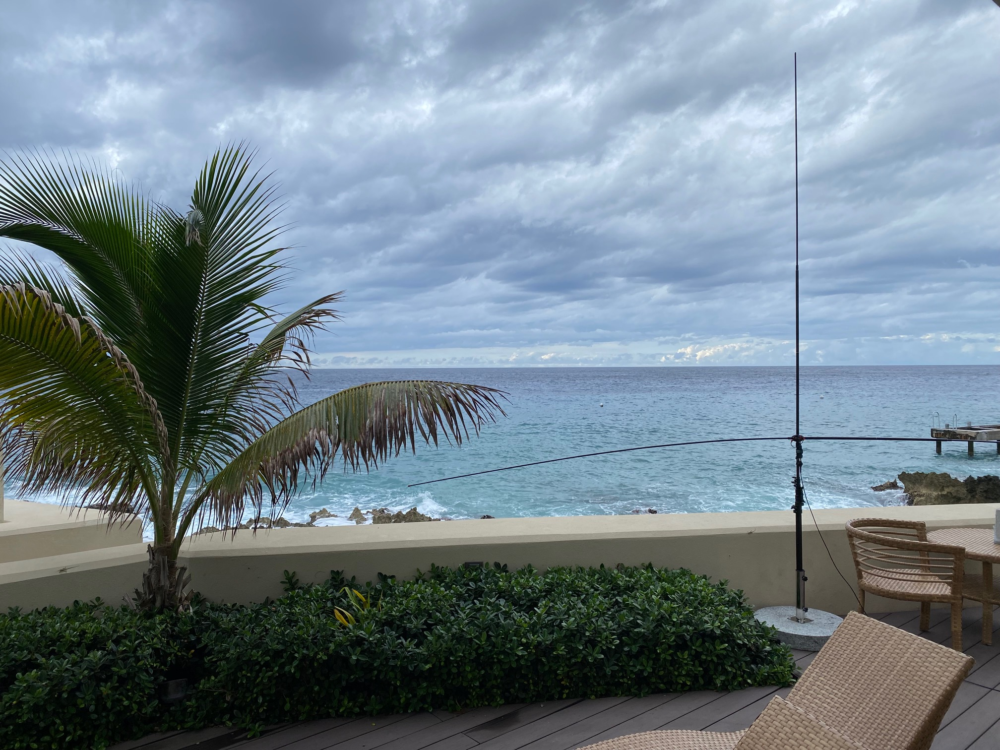
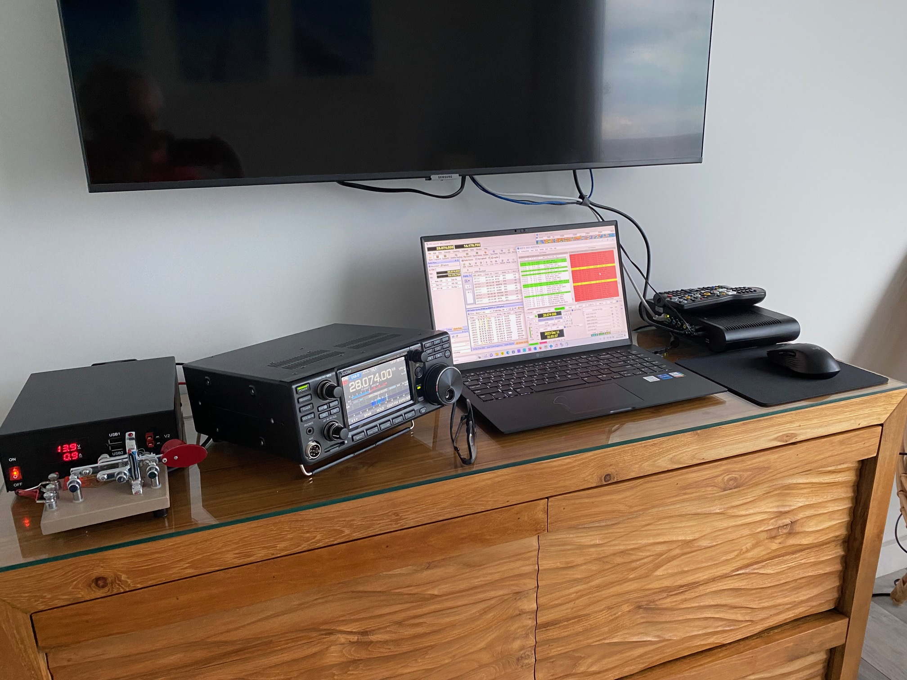

[Date Prev][Date Next][Thread Prev][Thread Next][Date Index][Thread Index]
[NCDXC Chat] ZF2NQ
The signals out here in the Caribbean from the NCDXC members are amazing. Despite having flown all day, you’re all just as strong here as you were at my home. It’s great hearing everyone on the air… I had just set up the Buddipole on our deck after, ahem, “repurposing” the granite patio umbrella stand. A brief CQ to test the setup, and I was blissfully stuck!
I do understand some of the weird behavior we’ve all noticed from FT8 DX… some can be blamed on WSJT glitches. My laptop is a touch overwhelmed, and the program has started calling CQ rather than responding to a station I had already selected, or sending a report to a station that had not even called me.
My gratitude to Rich KE1B who started me down this ruinous road. Without his advice, I would have forgotten something really important… or never thought about trying a Buddipole. Rich… it’s covered in saltwater! How often should I spray it down?
Anyway, the diving starts tomorrow!
Happy Holidays to all… even you guys who worked me twice with the second contact exactly 25 dB down from the first. I know the QRP dark side when I see it!
73. Bruce K3NQ/ZF2NQ
West End, CI


Sent from my iPhone
{kind=link}
{kind=link}